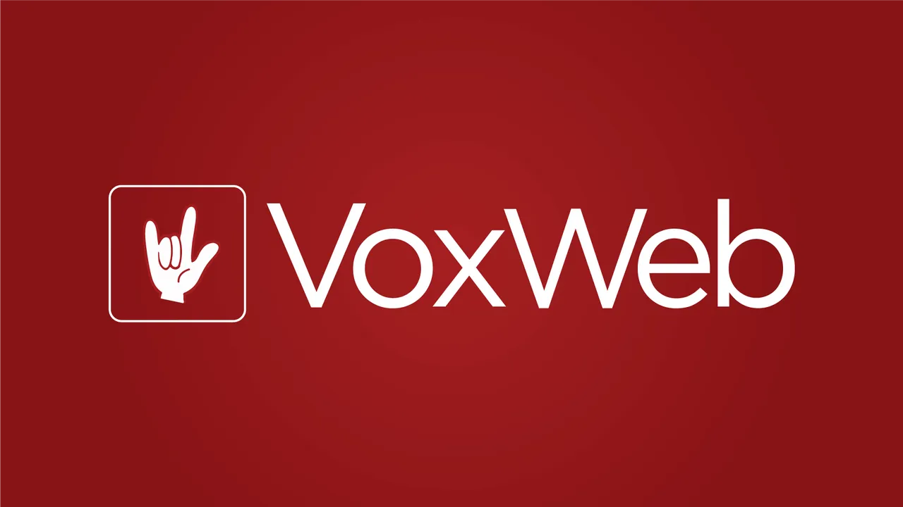
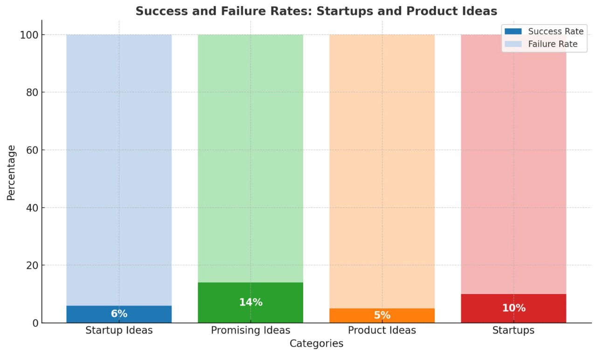

“There are thousands of dumb startups”

EIC MBM
Published on November 21, 2024

“The best startups might be considered slightly less dumb ideas than everyone else’s.” - Peter Thiel, the co-founder of PayPal.
Just thought of a banger startup idea that just might make you a millionaire? – Think again. While we’d all love to be our own Gary Dahl and sell pet rocks for $15 million before summer hits next year, chances are you’d most likely end up with a heavy heart – if not debts – and months of hard work down the drain than heavy pockets.
To some this might be a hard pill to swallow, after all, there are thousands of dumb startups. Everyone said Snapchat was stupid, they said SpaceX was stupid and so was Netflix and Bitcoin and selling packaged drinking water and yet here all these are today printing millions and billions of bucks. So why would your idea not?
Case Study: VoxWeb
Let’s take a look at an initially popular startup VoxWeb, a special purpose messaging and social networking application developed around speaking pictures or "voxies”. People could add voice messages to the posts. It gained momentum for bringing innovation to the mundane photo sharing feature. Seems nothing short of Snapchat, right?
But here's what Snapchat had that VoxWeb didn't, serving a niche hidden interest– privacy. It simply introduced vanishing texts and pictures, increasing secrecy that other social media apps then, like Facebook couldn’t. In comparison VoxWeb was an awkward event hoping to catch fire following the social media boom, but by 2017 it was already circling its downfall.
The Complexity of Startups
The world of startups may seem like a game of luck once you're in it. But the story is often more complex, startups that succeed are often seen as just crazy enough to work but are rooted in a deeper understanding of what others might not yet see. What seems dumb at first can sometimes turn into a highly profitable business.
Key Takeaways
Here’s a few things these seemingly dumb startups are doing that you should keep in mind:
- They Tap into a Hidden Need: What seems absurd on the surface may actually address a niche problem people didn’t realize they had.
- Clever Marketing and Novelty Factor: Sometimes the difference between a dumb idea and a billion-dollar success can sometimes come down to execution and timing.
Examples of Successful "Dumb" Startups
Some recent Indian startups – like Pee Buddy, selling disposable urine devices, RentAfriend and potato parcel, a startup that lets you send custom messages written on potatoes earned over a million dollars in revenue and even got a deal on Shark Tank – are good examples of dumb ideas that ultimately weren’t so dumb and solved a hidden problem of the society or used impressive marketing tactics to stay profitable.
Why Most Startups Fail
However, most startups fail to stay afloat because they don't address a real problem, which often means they lack a compelling reason to exist. You might think you can save your idea with clever marketing but more often than not people find that their startups are not scalable and fail to secure fundings and in case if they do, they burn through the money without a sustainable model or a clear goal. Without proper research and market analysis, any idea stays just a dumb idea with all the odds against it.